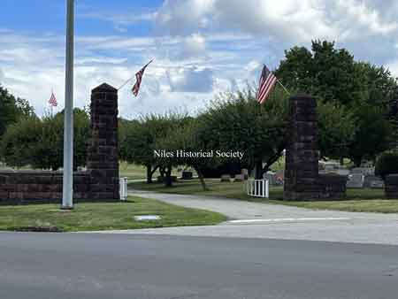
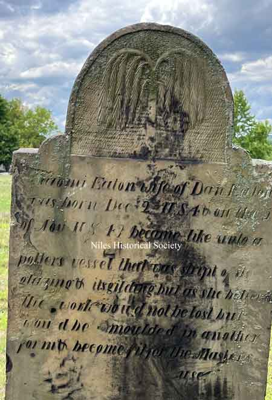
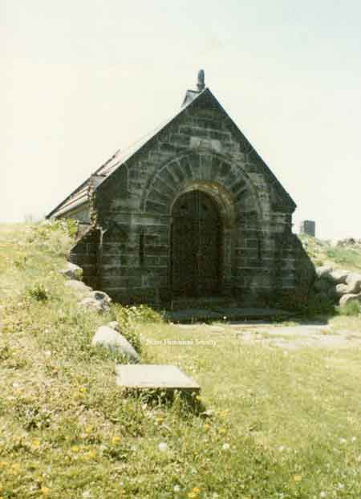
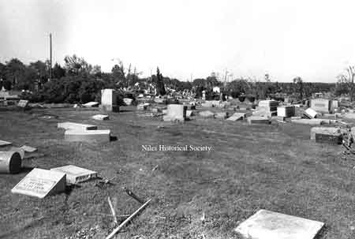
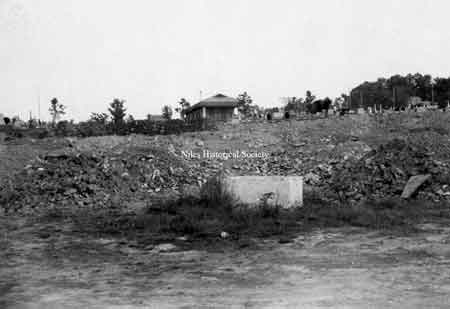
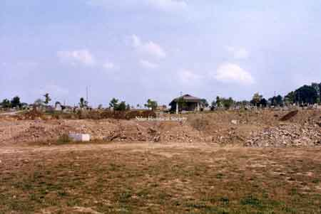
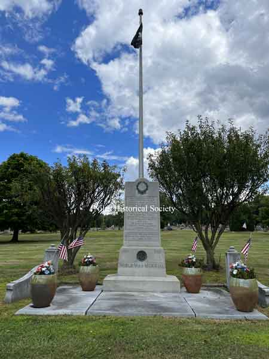
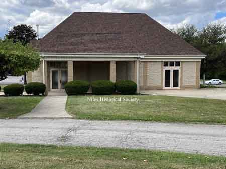

Niles Union Cemetery
{kind=link}

Main entrance to Union cemetery.

Tombstones for John and Hannah Heaton.
{kind=link}

Naomi Heaton grave marker.

John Heaton grave marker.

Priscilla Eaton grave marker.

James Heaton
Margaret Heaton

Warren Luse grave marker.

View of the Thomas E. Thomas crypt located in Union Cemetery in Niles, Ohio.

Heaton plot in Union Cemetery after the Niles Historical Society repaired and cleaned up the tornado damage.

Holloway crypt located in Union Cemetery
{kind=link}

Photo of a crypt damaged by the 1985 tornado. Damage is confined to upper wall next to roof on the left side.

Heaton plot in Union Cemetery after the Niles Historical Society repaired and cleaned up the tornado damage.

iew of cemetery destruction at Bentley Avenue and 'Dead End' sign.

May 31, 1985 Tornado damages in the Heaton plot of Union Cemetery in Niles, Ohio.
{kind=link}

A series of photographs showing in graphic detail, the aftermath of the tornado that ripped through Niles on May 31, 1985.

A series of photographs showing in graphic detail, the aftermath of the tornado that ripped through Niles on May 31, 1985.
{kind=link}

Filling in the quarry at Union Cemetery during September 1986. The mausoleum is in the background.
{kind=link}

Union Cemetery - filling in the quarry in front of the cemetery. Summer, 1986.

A photo of the gateway to the Niles Union cemetery erected in memory of Mrs. Elizabeth Parker Tibbetts at the Hartzell Avenue entrance sometime after 1940.

Memorial Gateway Erected in Honor of Mrs. Tibbetts.
{kind=link}

WWI Memorial at Union Cemetery.
{kind=link}
